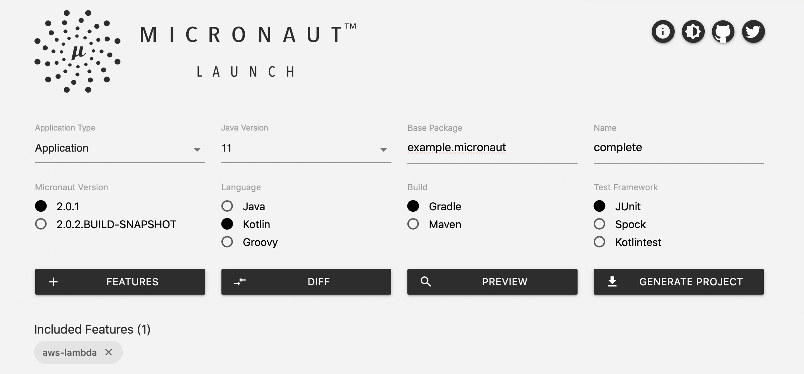

% mn create-app example.micronaut.complete --lang kotlin --features aws-lambda2 Writing the App
Version: null
Table of Contents
2 Writing the App
Create a micronaut application with the aws-lambda feature using the CLI:
or use Micronaut Launch

2.1 Code
The generated application contains a BookController. It responds to POST request to /.
src/main/kotlin/example/micronaut/BookController.kt
package example.micronaut
import io.micronaut.http.annotation.Body
import io.micronaut.http.annotation.Controller
import io.micronaut.http.annotation.Post
import java.util.UUID
import javax.validation.Valid
@Controller (1)
open class BookController {
@Post (2)
open fun save(@Valid @Body book: Book): BookSaved { (3)
val bookSaved = BookSaved()
bookSaved.name = book.name
bookSaved.isbn = UUID.randomUUID().toString()
return bookSaved
}
}| 1 | The class is defined as a controller with the @Controller annotation mapped to the path / |
| 2 | The @Post annotation is used to map HTTP request to / to the the save method. |
| 3 | Add the @Valid annotation to any method parameter’s object which requires validation. |
The controller’s method parameter is a Book object:
src/main/kotlin/example/micronaut/Book.kt
package example.micronaut
import io.micronaut.core.annotation.Introspected
@Introspected (1)
class Book {
var name: String? = null
}| 1 | Annotate the class with @Introspected to generate the Bean Metainformation at compile time. |
It returns a BookSaved object:
src/main/kotlin/example/micronaut/BookSaved.kt
package example.micronaut
import io.micronaut.core.annotation.Introspected
@Introspected (1)
class BookSaved {
var name: String? = null
var isbn: String? = null
}| 1 | Annotate the class with @Introspected to generate the Bean Metainformation at compile time. |
The generated tests illustrates how the code works when the lambda gets invoked:
src/test/kotlin/example/micronaut/BookControllerTest.kt
package example.micronaut;
import com.amazonaws.serverless.proxy.internal.testutils.AwsProxyRequestBuilder
import com.amazonaws.serverless.proxy.internal.testutils.MockLambdaContext
import com.amazonaws.services.lambda.runtime.Context
import com.fasterxml.jackson.databind.ObjectMapper
import io.micronaut.http.HttpHeaders
import io.micronaut.http.HttpMethod
import io.micronaut.http.HttpStatus
import io.micronaut.http.MediaType
import org.junit.jupiter.api.Assertions
import org.junit.jupiter.api.Test
import io.micronaut.function.aws.proxy.MicronautLambdaHandler
class BookRequestHandlerTest {
@Test
fun testBookController() {
val handler = MicronautLambdaHandler() (1)
val book = Book()
book.name = "Building Microservices"
val objectMapper = handler.applicationContext.getBean(ObjectMapper::class.java)
val json = objectMapper.writeValueAsString(book)
val request = AwsProxyRequestBuilder("/", HttpMethod.POST.toString())
.header(HttpHeaders.CONTENT_TYPE, MediaType.APPLICATION_JSON)
.body(json)
.build()
val lambdaContext: Context = MockLambdaContext()
val response = handler.handleRequest(request, lambdaContext) (3)
Assertions.assertEquals(response.statusCode, HttpStatus.OK.code)
val bookSaved: BookSaved = objectMapper.readValue(response.body, BookSaved::class.java)
Assertions.assertNotNull(bookSaved)
Assertions.assertEquals(bookSaved.name, book.name)
Assertions.assertNotNull(bookSaved.isbn)
handler.applicationContext.close() (2)
}
}| 1 | When you instantiate the Handler, the application context starts. |
| 2 | Remember to close your application context when you end your test. You can use your handler to obtain it. |
| 3 | You don’t invoke the controller directly. Instead, your handler receives a AWS Proxy Request event which it is routed transparently to your controller. |